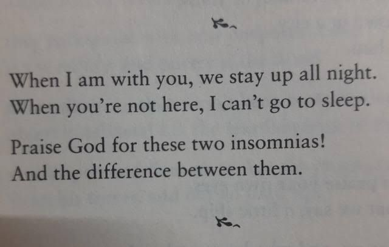

The Essential Rumi brings together the timeless poetry of one of the world's most revered spiritual thinkers. Translated by Coleman Barks, the words of Persian poet and Sufi mystic Jalal Ad-Din Muhammad Balkhi-Rumi ring through the ages and present themselves to be just as powerful, important, and necessary today as when first written in the thirteenth century. None of the poems and observations in The Essential Rumi are long, dry philosophical treatises; that is not Rumi's style. Instead, he distills age-old questions and spiritual wisdom into crystal-clear images and metaphors that shed brilliant, beautiful light on what it means to be a spiritual being having a human experience—which, ultimately, is what we all are.
The Essential Rumi separates the great master's writing into 28 different themed sections. This, Barks wryly says, is "to confuse scholars who would divide Rumi's poetry into the accepted categories." The categories of which Barks speaks are the general ones that an observer would use to organize any writer/thinker who created a monumental amount of output: odes, quatrains, poems, discourses, letters, sermons, etc. Rumi left thousands of works as part of his legacy, including 3,500 odes, 2,000 quatrains, and a multi-volume epic poem. But instead of separating all of these by type of writing, Barks takes on the far more challenging (and creative) role of separating them by recurring motifs. Some of these motifs are obvious, some are far more subtle. Among the themes are emptiness and silence, loving, separation, union, and even taverns. This approach underscores the fluidity of Rumi's writing. In a very real sense, these works inform and support one another. Unlike many religious or sacred texts, there's no contradiction or wishy-washiness to what Rumi is saying. His work is a journey to enlightenment put into words, "a fluid, continuously self-revising, self-interrupting medium."